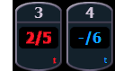

Rather than using cue times, timing can be applied directly at a parameter or channel level. This is referred to as discrete time.
Discrete timing can be applied to a specific channel or parameter. You must select the channels that you want to apply the time to, otherwise the system assumes you are addressing the selected cue.
Following are some examples of use:
Discrete delay times can also be placed on a channel parameter.
The [+] and [-] hardkeys can be used to increase or decrease discrete timing values.
When timing has been applied to a channel parameter in live, a small red “t” will be displayed with the channel. This indicates the timing must be stored or updated to the required cue. When this is done, the “t” is displayed in blue. In the Playback Status Display, a “+” is displayed in the associated parameter category time field, indicating that not all of the parameters in the cue will use the cue timing.

[About] & [Time] can be held down to see the discrete delay /time information for channels in Live /Blind. Delay is displayed first, followed by the timing value.
Note: Any conditions placed on channel /parameter in live (such as discrete timing, asserts, blocks, etc) must be stored or updated to the cue.
Discrete times can be entered as a percentage of the cue time.